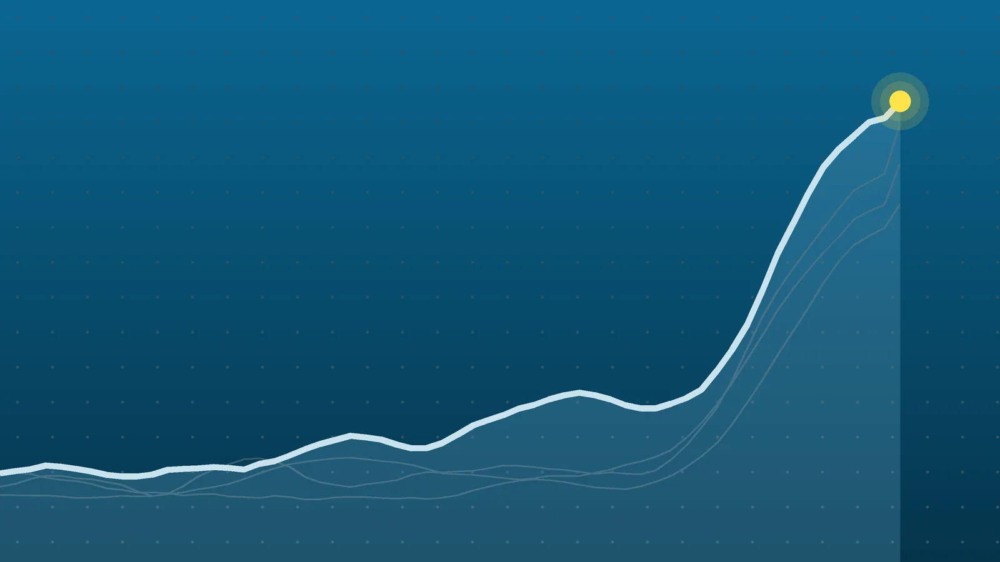

ScienceExplainer
Coral Reefs: 96% Now Critically Endangered, IUCN Assessment Says
The Great Barrier Reef, the Caribbean and the Coral Triangle all landed in the top risk category. Most of that rating rests on projected ocean heat, which is why scientists call the next few years a window, not a verdict.

Quick take
- 122 of 127 shallow-water coral reef ecosystems, or 96%, were rated critically endangered, covering 99.8% of the assessed reef area, according to the IUCN.
- Based only on changes observed over the past 50 years, 24% would be critically endangered; projected heat stress to 2075 drives the rest.
- The Western Galapagos reefs are rated collapsed, a status dating to the 1982-83 El Nino.
- More than 250 experts assessed reefs in over 80 countries and territories, covering 188,362 square kilometers.
Why it's trending The IUCN released its first global Red List assessment of coral reef ecosystems on Oct. 22 at the COP17 biodiversity summit in Yerevan, Armenia.
What happened
The world’s shallow-water coral reefs are almost all at extremely high risk of collapse within 50 years, according to the first global assessment of coral reef ecosystems on the IUCN Red List of Ecosystems. The International Union for Conservation of Nature released it on Thursday, Oct. 22, at the U.N.’s COP17 biodiversity summit in Yerevan, Armenia, AFP reported.
Of 127 reef ecosystems assessed, 122, or 96%, were rated critically endangered, the highest risk category short of collapse. Together they cover 99.8% of the reef area studied. The list includes Australia’s Great Barrier Reef, the Coral Triangle in Southeast Asia and the western Pacific, the Mesoamerican Barrier Reef System in the Caribbean, and the Red Sea.
Why it matters
Collapse, in the IUCN’s terms, doesn’t mean a reef vanishes. It means the reef loses what defines it: hard corals nearly disappear and algae, rubble and sponges take over, leaving a much poorer habitat that can’t support the same variety of sea life. Fish, sea turtles and sharks that depend on reefs feel it through the food web, CORDIO East Africa noted.
One reef system has already reached that point. The Western Galapagos reefs are listed as collapsed, a condition the IUCN traces to the 1982-83 El Nino.
The past vs. the projection
The headline number mixes what has already happened with what’s expected. That split is the most important thing to understand about this report.
| Basis | Critically endangered | Any threatened category |
|---|---|---|
| Observed change over the past 50 years only | 30 ecosystems (24%) | 116 ecosystems (91%) |
| Including projected heat stress to 2075 | 122 ecosystems (96%) | all 122; the other 5 are data deficient (4) or collapsed (1) |
In other words, about three-quarters of the critically endangered ratings, 92 of the 122, come from projected warming that hasn’t fully played out yet. The projection uses a middle-of-the-road climate scenario of about 2.7 degrees Celsius of warming by 2100, according to the IUCN and AFP. The U.N. warned on Oct. 21 that current national pledges put the world on track for about 2.6 degrees, AFP reported.
“Much of the risk is driven by projected change that has not yet fully materialised,” said Mishal Gudka of CORDIO East Africa, the assessment’s scientific lead, which is why he and the IUCN frame the result as a window for action.
What’s driving the decline
- Ocean heat. Marine heatwaves cause mass bleaching, when stressed corals expel the algae that feed them and often die. Heat stress over the past 50 years already threatens 77% of reef ecosystems, and over the next 50 years heat alone would push 95% into the top category, according to the IUCN’s detailed findings.
- Overfishing. Losing grazers and predators such as parrotfish and groupers upsets the balance between coral, algae and fish in 63% of ecosystems. Parrotfish keep algae in check, so fewer of them makes it harder for coral to regrow.
- Small, isolated reefs. About 45% of ecosystems are small or remote enough that a single cyclone, bleaching event or disease outbreak could wipe them out.
- Local pressures. Pollution, sediment, coastal development, heavy tourism and outbreaks of coral-eating crown-of-thorns starfish all add stress.
AFP noted that a strong El Nino emerging this year poses a further near-term risk. The Western Indian Ocean has already seen major bleaching in 1998, 2016 and 2024, CORDIO said.
How the rating works
Each reef region was scored against five criteria: loss of reef area, how restricted its range is, environmental decline such as heatwave bleaching, disruption of biological processes, and a modeled risk of collapse. A region’s final category is its worst score on any one of them. More than 250 experts in 10 regional teams used decades of monitoring data on coral, algae and fish, plus satellite sea temperature records. The study covered only sunlit, shallow reefs, not deep or cold-water corals.
What happens next
The IUCN’s prescription is deep emissions cuts to slow ocean warming, combined with local steps that help reefs recover: cleaner coastal water, sustainable fishing, rebuilding fish stocks and protecting nearby mangroves and seagrass. Some reefs are holding up relatively well, among them Bermuda, West Kiribati, Papua New Guinea and the northern part of the Red Sea.
At COP17, governments are under pressure to make progress on the global pact to halt and reverse nature loss by 2030, a deal that also aims to protect 30% or more of the world’s oceans and coasts by the same date. “It is not too late to give coral reefs a chance to recover,” said IUCN Director General Grethel Aguilar.
Quick answers
Are coral reefs going extinct?
Not exactly. The assessment rates the risk that reef ecosystems collapse, losing most living coral, by about 2075. Separately, the IUCN found that 44% of 892 reef-building coral species are threatened with extinction.
Is the Great Barrier Reef critically endangered?
Yes. All 17 Australian reef ecosystems in the assessment, including the Great Barrier Reef, are rated critically endangered once projected heat stress is included.
What is the IUCN Red List of Ecosystems?
It is the IUCN’s system for rating how close whole ecosystems are to collapse, using categories similar to its better-known Red List for individual species.
Sources
- IUCN Virtually all coral reef ecosystems face high risk of collapse in 50 yearsOct. 22, 2026
- IUCN Red List of Coral Reef EcosystemsOct. 22, 2026
- AFP via The Manila Times Nearly all coral reefs risk collapse in 50 yearsOct. 23, 2026
- CORDIO East Africa Nearly all coral reefs, including in the Western Indian Ocean, at critical risk of collapseOct. 22, 2026